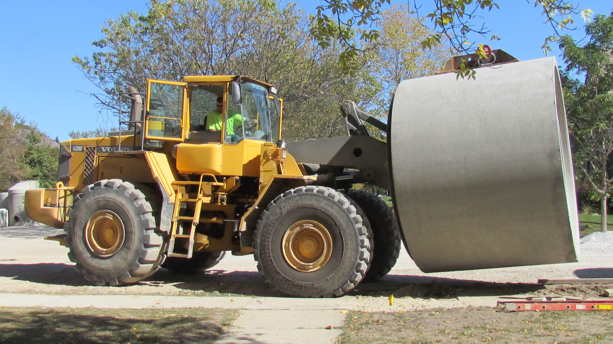
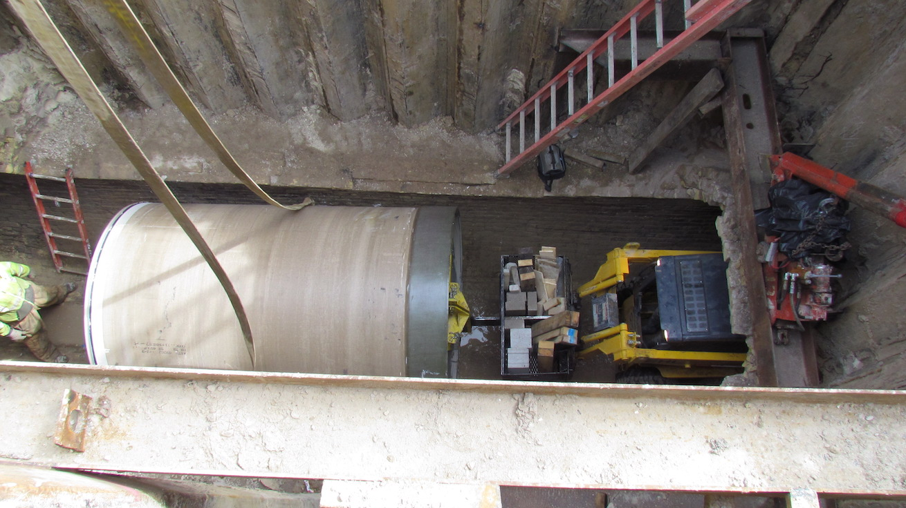

Municipal Projects
- 
Meinecke Ave Flood Mitigation
Wauwatosa, WI
A number of heavy rain events caused flooding and extensive damage to basements due to the inability of the existing storm sewer system to keep up. This led to the city of Wauwatosa putting forth their largest public works project to date. The job consisted of over 3,500 LF of very large diameter storm sewer installation (108” – 120”, that’s 11’ outside diameter!), at depths ranging from 14-23 feet. An additional 3,600 LF of storm sewer ranged in sizes between 12”-96”. Engineers faced significant challenges when designing a way to make space for a new sanitary sewer and water main to run alongside. In total we installed over 9,400 LF of sanitary from 8” – 30” at depths of 11’-25’, and 2,350 LF of water main at depths of 7’-15’. In one of our largest projects to date, we learned valuable lessons in project management, very large diameter installation methods/techniques, and trench safety.
- 
18th St. & Becher St. Slipline
Milwaukee, WI
This project involved one of our more challenging sliplines to date. The pipe to be replaced was a 96” three-layer brick combined sewer, which was commonly constructed by hand and on-site back in the late 1800’s and early 1900’s. Being as large as it is, it’s essentially a long tunnel, which makes for a prime slipline candidate. We dug down on one end and loaded 550 LF of 85” Hobas (fiberglass mortar pipe) with the help of an attachment we created to the front of a skid steer. We lowered a segment of the pipe down, lined up the attachment, and then literally drove it down the length of the tunnel until it was in place.